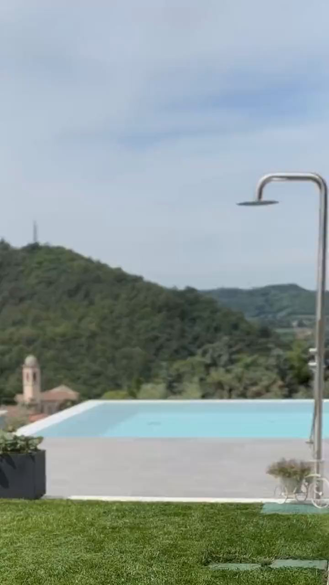
Giardinieri a Flero e nel sud di Brescia Il tuo giardino sempre bello. Ci pensiamo noi.
Manutenzione, potature, alberi alti e giardini nuovi: scrivici su WhatsApp e veniamo a vedere il tuo verde.
Scrivici su WhatsAppTi rispondiamo direttamente noi.
- Periti e laureati in agrariaUna squadra di tecnici che conosce le piante e le loro stagioni.
- Assicurazione RCLavoriamo con assicurazione di responsabilità civile verso terzi.
- Mezzi professionaliPiattaforma aerea, attrezzatura da tree climbing, miniescavatore e catenaria.
- Preventivo scrittoChiaro e voce per voce, prima di iniziare.
Servizi
Tutto il tuo verde, con un'unica squadra.
Dal taglio del prato agli alberi più alti, dalla siepe al giardino nuovo. Scegli il lavoro e scrivici: fissiamo insieme il sopralluogo.
-
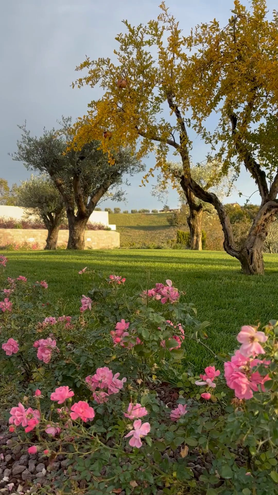
Manutenzione del giardino
Prato, siepi, aiuole e pulizia, anche nei giardini di pregio: su chiamata o con un contratto annuale, il tuo giardino resta curato in ogni stagione.
Chiedi su WhatsApp -
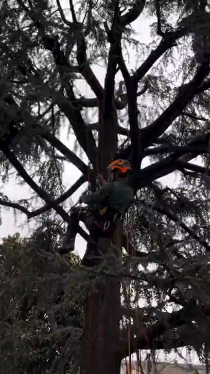
Alberi alti e tree climbing
Saliamo sulla pianta con funi e imbrago, oppure con la piattaforma aerea, e potiamo con tagli puliti e mirati.
Chiedi su WhatsApp -
Abbattimenti controllati
Smontiamo l'albero pezzo per pezzo e caliamo i rami con le funi, per proteggere tutto ciò che c'è intorno.
Chiedi su WhatsApp -
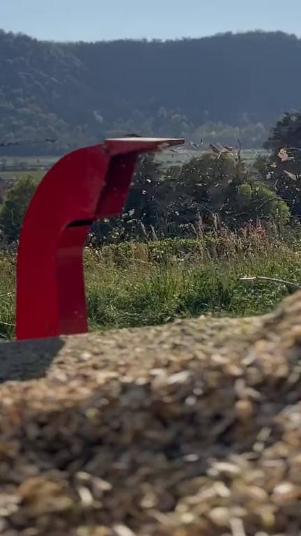
Cippatura dei rami
Con il cippatore trituriamo rami e potature direttamente in cantiere: il verde tagliato diventa cippato e lo spazio torna subito in ordine.
Chiedi su WhatsApp -
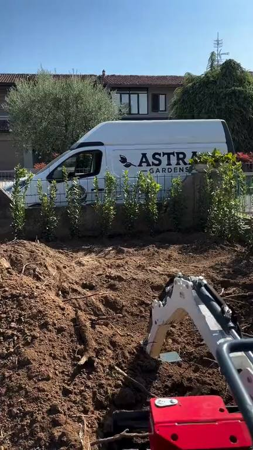
Giardini nuovi e movimento terra
Scavi, livellamenti e rimozione delle ceppaie con il miniescavatore, poi piante, prato e finiture: dal terreno al giardino finito.
Chiedi su WhatsApp -
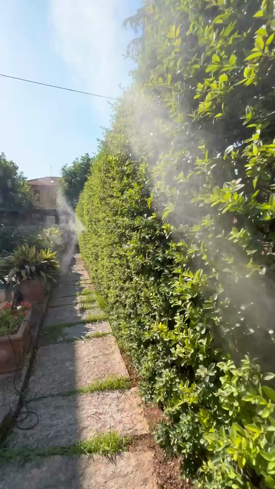
Impianti antizanzare
Nebulizzazione lungo siepi e perimetro del giardino: vivi i tuoi spazi esterni con più serenità, anche nelle sere d'estate.
Chiedi su WhatsApp
Altri servizi per il tuo verde
-
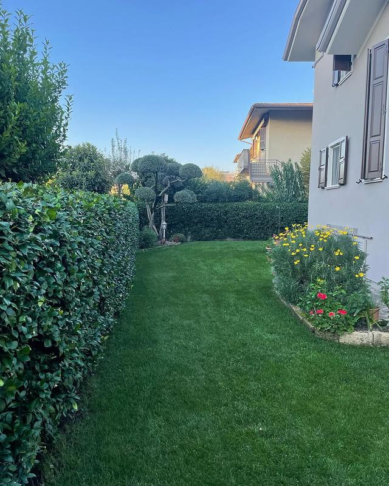
Potatura di siepi e arbusti
Siepi compatte e arbusti in forma, potati nel periodo giusto per ogni pianta.
Chiedi su WhatsApp -
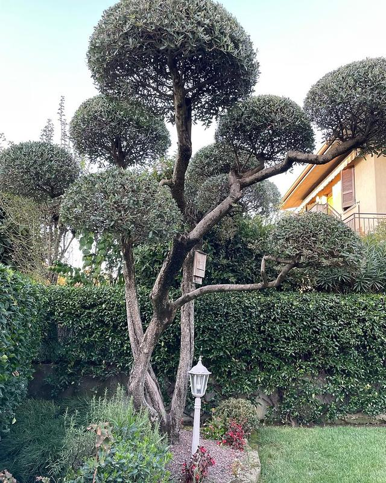
Ulivi
Potatura degli ulivi, anche ornamentali nella forma a pon pon: una chioma ariosa, luminosa e bella da vedere.
Chiedi su WhatsApp -
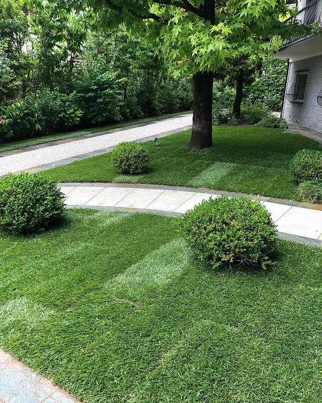
Prato in zolle e semina
Prepariamo e livelliamo il terreno, poi posiamo le zolle o seminiamo, per un prato verde e uniforme.
Chiedi su WhatsApp -
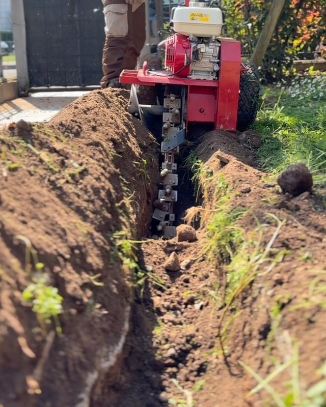
Impianti di irrigazione
Progettiamo e posiamo l'impianto più adatto al tuo giardino. Con la catenaria scaviamo le tracce anche negli spazi stretti.
Chiedi su WhatsApp -
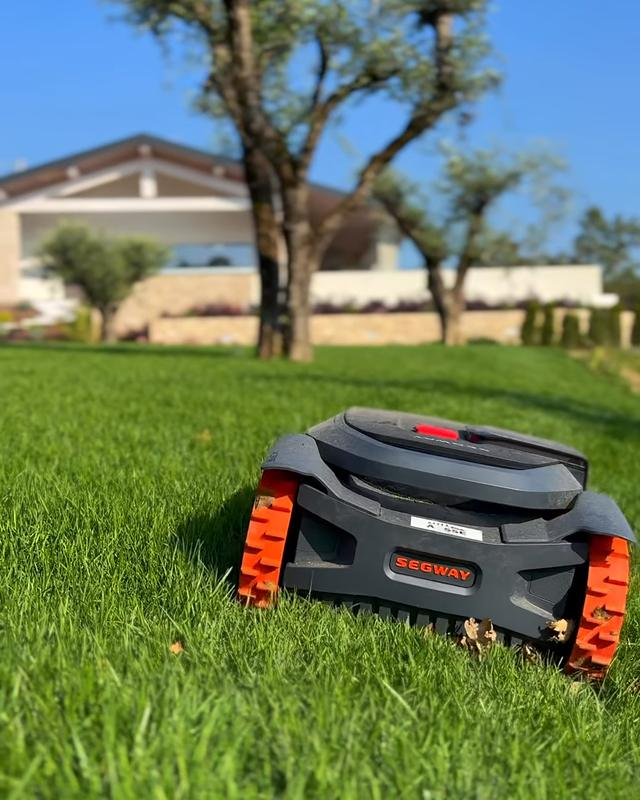
Robot rasaerba
Installiamo e regoliamo il robot rasaerba sul tuo prato: l'erba resta corta e ordinata tutta la settimana.
Chiedi su WhatsApp -
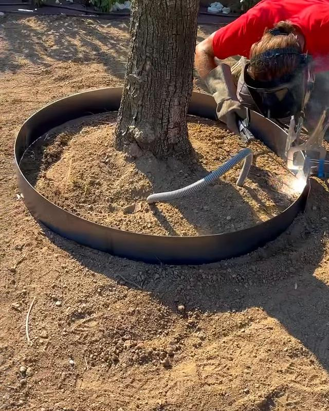
Bordure in corten
Bordure in acciaio corten sagomate su misura direttamente in giardino: linee pulite tra prato, ghiaia e aiuole.
Chiedi su WhatsApp -
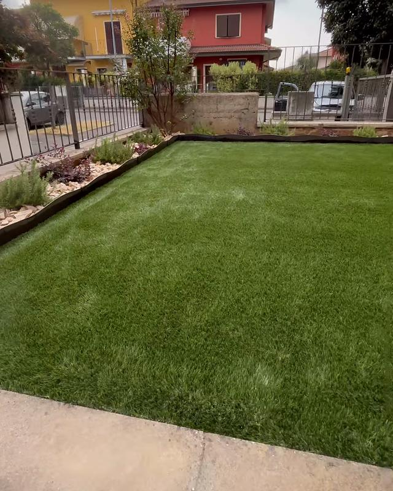
Cura dell'erba sintetica
Pulizia e spazzolatura del prato sintetico, per un manto ordinato, morbido e pulito.
Chiedi su WhatsApp -
Hai in mente un altro lavoro?
Raccontacelo su WhatsApp, anche con una foto: troviamo insieme la soluzione giusta per il tuo verde.
Scrivici
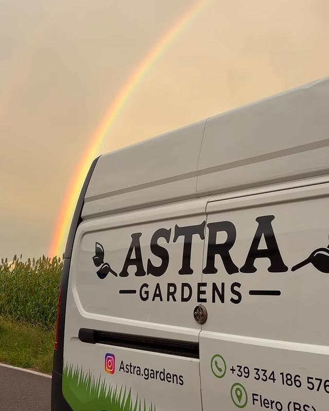
Astra GardensFlero (BS) · dal 2025
Chi siamo
Una squadra giovane, nata a Flero.
Astra Gardens nasce nel 2025 da un gruppo di periti agrari e laureati in agraria. Siamo giovani, con una grande conoscenza tecnica del settore e una mentalità aperta, sempre rivolta al futuro.
Nei giardini di Flero e del sud di Brescia portiamo competenza, mezzi professionali e tanta cura per i dettagli: ascoltiamo chi vive il giardino, scegliamo il momento giusto per ogni pianta e a fine lavoro lasciamo tutto pulito e in ordine.
«Pensato con la testa, realizzato con le mani.»
- Tree climbing
- Piattaforma aerea
- Miniescavatore
- Catenaria
- Cippatore
Progetto e render IA
Vedi il tuo giardino prima di iniziare.
La progettazione nasce dalla nostra competenza e dalla conoscenza delle piante. Per il render e per un preventivo rapido usiamo le nostre intelligenze artificiali, i nostri agenti IA: così vedi subito il risultato finito.
Trascina il cursore sull'immagine: a sinistra il giardino di oggi, a destra il progetto.
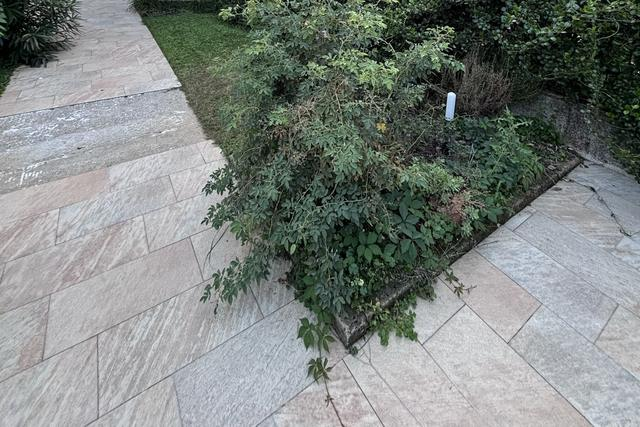
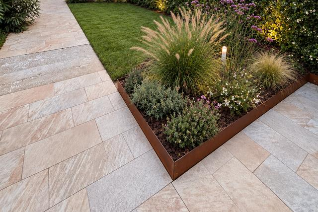
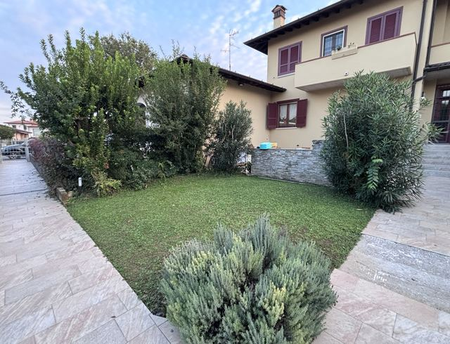
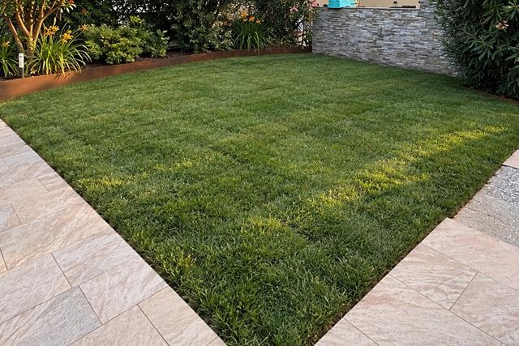
- Progetto pensato dalla nostra squadra di tecnici del verde
- Render realistico del tuo giardino finito
- Preventivo rapido, scritto e chiaro
Come lavoriamo
Quattro passi chiari, dal primo messaggio al lavoro finito.
Sopralluogo
Ci scrivi su WhatsApp, fissiamo insieme un giorno e veniamo a vedere il tuo giardino. Ascoltiamo cosa desideri.
Progetto e preventivo
Ricevi un preventivo scritto, voce per voce, e quando serve anche il render del progetto: vedi subito il risultato finito.
Cantiere organizzato
Prima di partire ti mostriamo il piano di cantiere. Poi arriviamo nel giorno concordato con le persone e i mezzi giusti.
Pulizia e foto finali
A fine lavoro puliamo tutto e ti mandiamo le foto del lavoro finito: vedi il risultato anche da lontano.
Il cantiere
Il cantiere organizzato prima di partire.
Prima di iniziare ti mostriamo cosa facciamo, dove appoggiamo rami e materiali e dove si ferma il camion: così tutto è chiaro e ordinato fin dal primo giorno.
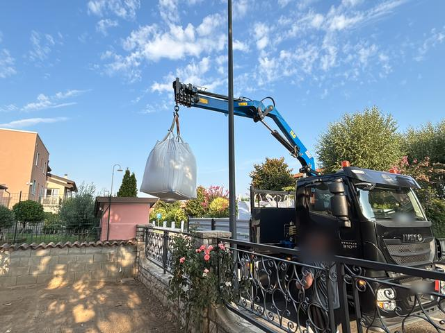
Materiali consegnati con la gru, direttamente dove servono. 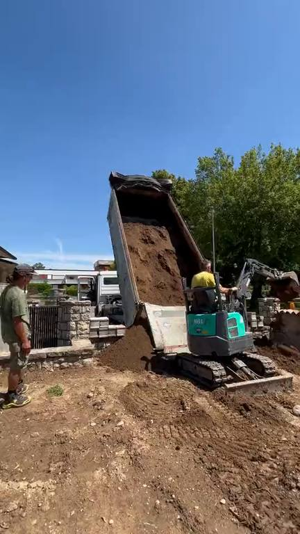
Terra nuova scaricata dal camion e stesa con il miniescavatore. 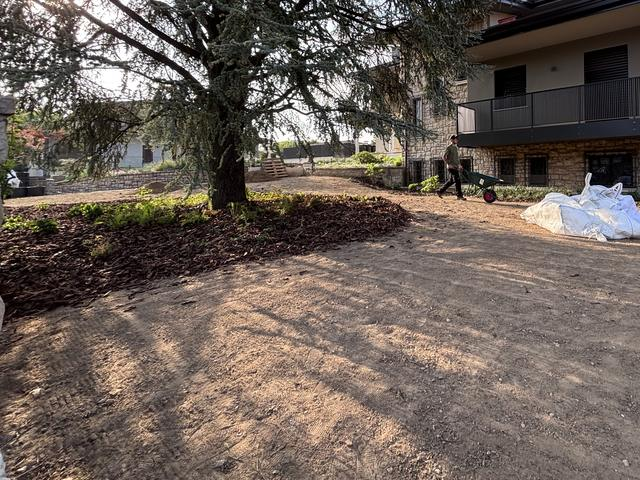
Terreno livellato e pronto per il nuovo prato.
Lavori
Guarda i nostri lavori.
Foto e video veri dei nostri cantieri, girati dalla squadra. Tocca una foto per vederla grande.
Lavoro realizzato · foto vere
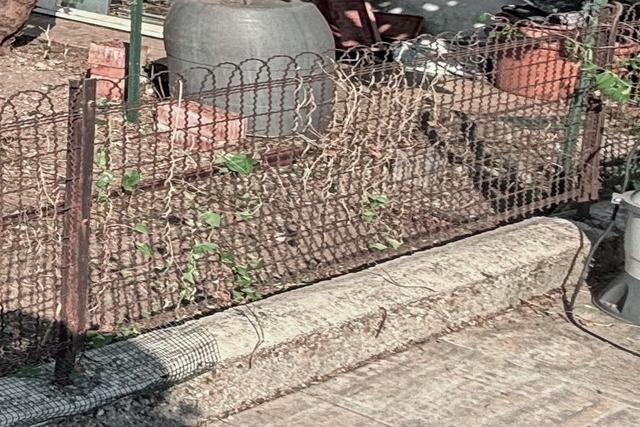
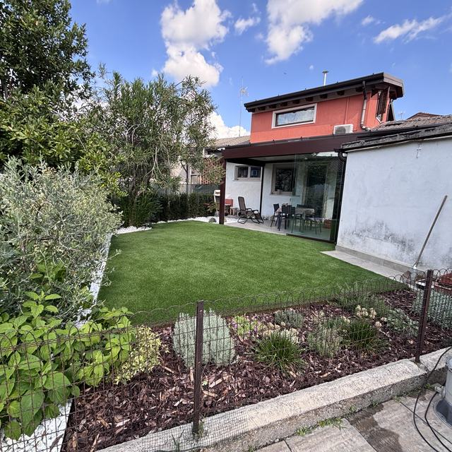
Da terreno spoglio a giardino finitoPrato, aiuola pacciamata, un ulivo e nuove piante: foto scattate prima e dopo il nostro lavoro.
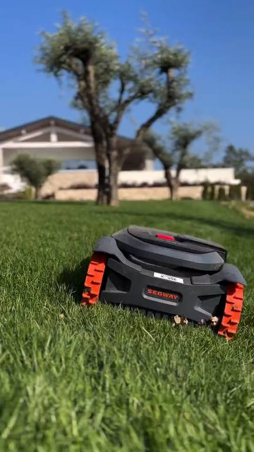
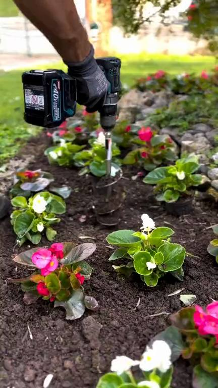
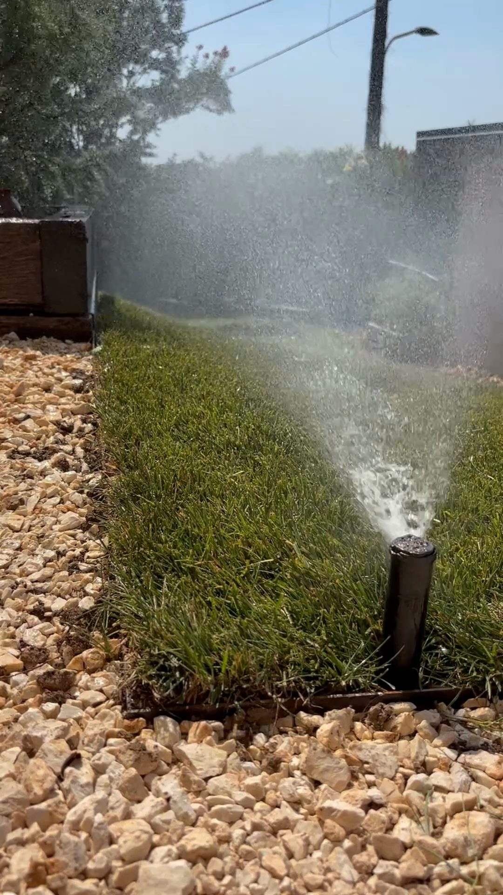
Altre foto e video dai nostri cantieri sul profilo Instagram @astra.gardens
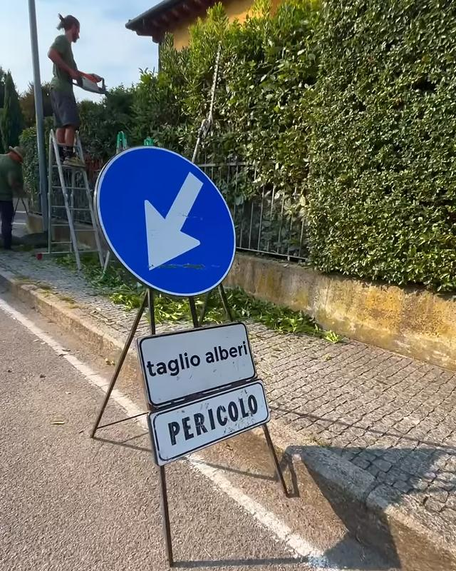
Condomini e aziende
Il verde del tuo condominio o della tua azienda, sempre in ordine.
Per amministratori, condomini e aziende organizziamo la manutenzione programmata del verde, con un referente unico che segue ogni intervento.
- Manutenzione programmata del verde, tutto l'anno
- Un referente unico per ogni richiesta
- Alberi alti con piattaforma aerea e tree climbing
- Cantiere segnalato e assicurazione RC verso terzi
- Preventivo scritto e foto a fine intervento
Zone servite
Vicino a te: Flero, Brescia e dintorni.
Partiamo da Flero e lavoriamo in questi comuni:
- Flero
- Brescia
- Castel Mella
- Poncarale
- Roncadelle
- San Zeno Naviglio
- Borgosatollo
- Montirone
- Capriano del Colle
- Castenedolo
- Bagnolo Mella
- Azzano Mella
- Torbole Casaglia
- Gussago
- Cellatica
Abiti in un comune vicino? Scrivici su WhatsApp e valutiamo insieme.
Contatti
Parliamo del tuo giardino.
Il modo più facile è WhatsApp: scrivici due righe e, se vuoi, aggiungi qualche foto del tuo verde. Ti rispondiamo direttamente noi.
Scrivici su WhatsApp